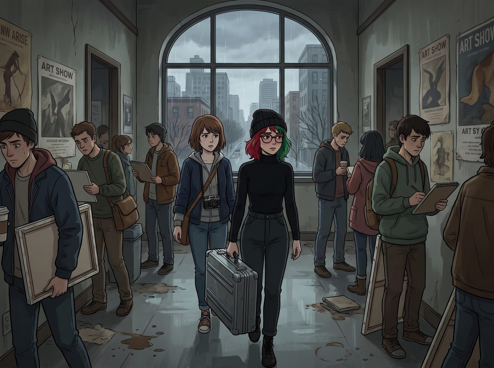

解構主義的意外

波特蘭的十二月，天空總是呈現出一種令人抑鬱的鉛灰色。
太平洋西北藝術學院的走廊裡，瀰漫著松節油、隔夜黑咖啡和無數藝術生因為死線逼近而散發出的存在主義焦慮。
Max 背著她的復古相機包，像個操碎了心的老母親一樣，緊緊跟在 Lily 身後。
一、履行合規義務
「聽著，實習生，」Max 壓低聲音，語氣裡充滿了警告，「我們今天只是來交期末作品的。不准駭入學校的教務系統，不准向國稅局舉報校長的海外帳戶，更不准用校區消防法規把妳的雕塑課教授送進局子。我們交完作品就走，好嗎？我可不想在我的母校被當成恐怖分子。」
Lily 穿著一件毫無褶皺的黑色高領毛衣，手裡提著一個沈甸甸的防磁公文包。她推了推反光圓框眼鏡，用那種軟糯且極度理性的聲音回答：「Max 學姐，妳的擔憂在統計學上是不必要的。雖然我已經透過教育平權法案的漏洞和幾封律師函，合法豁免了我本學期大部分的到校義務，但根據校方的學分認定底線，我仍需提交一份期末實體作品以維持我的學生簽證合法性。我今天是來履行合規義務的。」
Max 嘆了口氣。正是因為 Lily 把交作業說得像履行引渡條約，她才非要跟過來不可。
兩人推開了綜合媒材藝術系的評圖室大門。房間中央，留著一頭狂野長髮、戴著不對稱幾何眼鏡的先鋒藝術教授 Silas，正對著一個由廢舊衛生紙筒和生鏽鐵絲組成的裝置藝術痛哭流涕，稱其為對消費主義晚期不可挽回的哀歌。
二、五百頁的期末作品
「下一位，Lily 小姐。」Silas 教授擦了擦眼淚，轉過頭，用一種期待又帶著點畏懼的眼神看著這個傳說中把前任系主任逼到提前退休的神奇新生。
Lily 走上前，面無表情地打開防磁公文包。「砰」的一聲悶響。她將一份足足有五百頁厚、用黑色啞光皮革完美裝訂、甚至還帶著金屬包邊的沈重文件，砸在了評圖桌上。
Max 在後面痛苦地閉上了眼睛，心想完蛋了，學校今天要被查封了。
「這是我的期末作品。」Lily 雙手交疊放在身前，聲音冷得像一條冬眠的蛇，「作品名稱：《本校藝術基金會結構性財務漏洞與教職員工剝削之量化審計報告》。」
全場死寂。其他幾個學生嚇得連呼吸都停止了。
Lily 開始了她冷酷的作品闡述，或者說，威脅：「在第三章第四十七頁，我詳細列出了貴系在過去三年中，如何利用藝術材料補助的名義，進行了高達二十七萬美元的非法避稅；在第七章，我對比了 Silas 教授您的工時與實際薪資，從勞工法的角度證明了學校對您的剩餘價值進行了嚴重的違法榨取。這份報告已經抄送了一份加密副本到我的雲端伺服器……」
Lily 推了推眼鏡，鏡片閃過一道危險的反光：「如果我的期末成績低於A+，這份副本將在五分鐘後自動發送給稅務局、聯邦勞工部以及三家獨立調查媒體。」
她說完了。這是一次完美的、毫無破綻的行政勒索。Lily 靜靜地站在那裡，等待著對手崩潰、求饒，或者憤怒地報警——這都是她預判範圍內、可以完美應對的邏輯反應。
三、天才之作
然而，在一陣令人窒息的沉默後……
Silas 教授顫抖著伸出手，輕輕撫摸著那份皮革裝訂的審計報告。他的眼眶紅了。這一次，不是因為衛生紙筒，而是因為某種更深層次的震撼。
「天才……」Silas 教授喃喃自語，猛地抬起頭，雙眼放射出狂熱的光芒，「這簡直是天才之作！！」
Lily 那張總是掛著完美微笑的臉，罕見地出現了一絲……呆滯。「……什麼？」
「解構！這就是最極致的解構！」Silas 教授激動地揮舞著雙手，指著那份審計報告，對著全班同學大喊，「你們看到了嗎？Lily 同學沒有用畫筆，也沒有用雕刻刀。她直接拿起了資本主義與官僚體制最冰冷、最暴力的武器——審計與合規——來反向刺穿了體制本身！」
教授翻開報告，看著裡面密密麻麻的數據圖表和冷酷的法務條款，激動得渾身發抖：「看看這些圓餅圖！看看這些毫無感情的稅法引用！這裡面沒有一絲一毫的人性，卻將我們這個被資本異化的藝術學院，刻畫得入木三分！這是後現代達達主義與極繁主義的完美碰撞！」
四、邏輯過載
Lily 的CPU開始出現運算錯誤。「教授，這不是隱喻。」Lily 的語速變快了，帶著一絲急迫，試圖把局面拉回她的邏輯框架，「我是認真的。如果您不給我A+，這份包含您個人稅務違規紀錄的文件就會——」
「互動式威脅！」Silas 教授尖叫起來，雙手捂住臉頰，興奮得快要暈過去了，「天哪，她甚至打破了第四面牆！她將創作者對審查者的權力壓迫作為一種行為藝術，實時發生在評圖室裡！這種充滿了侵略性的、讓人坐立難安的恐懼感……這就是藝術的真諦啊！！」
底下的藝術生們被教授的情緒感染，紛紛起立，開始熱烈鼓掌。「太酷了……」「這才是真正的體制批判……」「相比之下，我的衛生紙筒簡直就是垃圾……」
在一片雷鳴般的掌聲中，那個在華爾街和政府部門面前都能游刃有餘、把最高官員玩弄於股掌之間的行政黑魔法師 Lily，此刻僵硬地站在原地。
她那雙平時總是在飛速計算概率的大眼睛，現在充滿了迷茫。她微微張著嘴，看著這群對著一份真實的犯罪審計報告感動落淚的藝術家們，生平第一次，她的世界觀出現了一條無法修復的裂縫。
「邏輯……不成立……」Lily 喃喃自語，手指無意識地在半空中抓了兩下，似乎想要敲擊某個不存在的鍵盤來修復這個瘋狂的世界，「他們為什麼不怕？這不符合利益博弈的納什均衡……這是一份會讓他們坐牢的報告啊……」
五、失效的黑魔法
站在後面的 Max，已經快要憋笑憋到內傷了。
她走上前，一把拉住已經快要因為邏輯過載而冒煙的 Lily 的胳膊。「好了，偉大的行為藝術家，妳的表演結束了。」Max 一邊努力壓抑著狂笑，一邊對著還在抹眼淚的教授揮了揮手，「謝謝 Silas 教授，我們會把這份藝術品留在這裡供大家觀摩的。成績單記得寄到我們的郵箱！」
Max 半拖半拽地把陷入當機狀態的 Lily 拉出了教室。
走到校門口的冷風中，Lily 才終於像是重啟成功了一樣，猛地吸了一口氣。她轉過頭，神情無比嚴肅、甚至帶著一絲驚恐地看著 Max。
「Max 學姐，」Lily 的聲音罕見地帶上了一絲顫音，那是一種最高級別的防禦系統遇到無法解析的亂碼時的恐懼，「藝術學院的人……都是神經病嗎？他們沒有風險厭惡機制嗎？他們的大腦前額葉是不是被松節油溶解了？」
Max 終於忍不住，扶著牆哈哈大笑起來。「歡迎來到藝術的世界，實習生。」Max 伸出手，揉了揉 Lily 已經亂掉的頭髮，「在這裡，妳那些冰冷的法條和恐嚇，只會被當成最前衛的概念藝術。看來妳的黑魔法，對這群本來就瘋瘋癲癲的人是無效的哦。」
Lily 驚魂未定地推了推眼鏡，深吸了一口氣，迅速恢復了她那種軟糯但冷酷的語調：「我明白了。這是一個無法用常規博弈論解析的非理性實體集群。我這輩子……不，未來五個財政年度之內，我都絕對不會再踏入這個校區半步。」
「隨妳的便，只要妳不把學校炸了就行。」Max 笑著摟住這個平時讓敵人聞風喪膽、現在卻被一群文青嚇得落荒而逃的女孩。「走吧，藝術家，為了慶祝妳拿了A+，學姐請妳去吃波特蘭最好的甜甜圈。」
「……好的，Max 學姐。」Lily 乖巧地回答，雖然還在警惕地看著背後那棟瘋狂的藝術大樓，但她緊繃的肩膀，終於在 Max 的體溫下慢慢放鬆了下來。